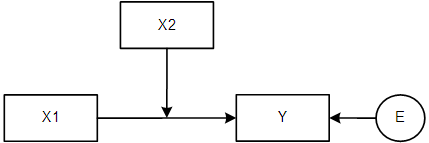
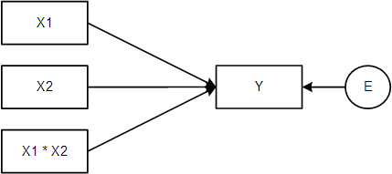

The foundation of the regression model is the equation that describes the relationship between two variables. In a simple bivariate linear regression, we use the equation:
\(Y_i = a + b \cdot X_i + e_i\)
Where:
\(Y_i\) represents an individual’s score on the dependent variable \(Y\).
\(a\) is the intercept coefficient of the regression line.
\(b\) is the slope coefficient of the regression line.
\(X_i\) is an individual’s score on the independent variable \(X\).
\(e_i\) is the prediction error for individual \(i\).
The regression line provides us with predicted values based on the model. It can be represented as:
\(\hat{Y}_i = a + b \cdot X_i\)
Where \(Y^i\) is the predicted score for individual \(i\) on the dependent variable \(Y\).
11.1 Introducing Interactions
Now, let’s take our regression analysis to the next level by introducing the concept of interactions. An interaction implies that the effect of one predictor variable depends on the level of another predictor variable.
To incorporate interactions, we add a special building block to our regression equation:
\(Y = a + b_1X_1 + b_2X_2 + b_3(X_1 \times X_2)\)
To include an interaction term in your regression model:
Calculate a new variable as the product of the two interacting variables.
Add this interaction term to the regression equation along with the original variables. Note: You should never include an interaction term in the model without including its constituent terms!
In summary, interactions add a new layer of complexity to regression analysis by acknowledging that the relationships between variables can be contingent on other factors. By incorporating interactions, we can gain deeper insights into the nuanced dynamics between predictors and outcomes in our statistical models.
11.2 Interaction between one Continuous and one Binary Predictor
Interaction is easiest to explain using one binary predictor, coded as 0 and 1, and one continuous predictor.
Recall that using this type of “dummy coding” allows us to represent different intercepts for the two groups in our regression model. The intercept of the regression equation applies to the group coded 0 (the reference group), and the intercept of the group coded 1 is equal to the overall intercept plus the effect of the dummy variable. In formulas this is represented as:
\[
\begin{align}
Y &= a + bD \text{, where D} \in(0,1)\\
Y_{D=0} &= a + b*0 = a\\
Y_{D=1} &= a + b*1 = a + b
\end{align}
\]
An interaction implies that not only the intercept but also the regression slope differs between two groups. Imagine we add continuous predictor \(X\) to the model, as well as the interaction term \(D*X\):
\[
\begin{align}
Y &= a + b_1D + b_2X +b_3 (D*X)
\end{align}
\]
In some cases, we might want to estimate not only distinct intercepts but also distinct slopes for different groups. For instance, we might be interested in understanding how the effect of gender role attitudes on involvement differs for men and women.
The complete formula for the regression line varies based the value of dummy variable \(D\):
\[
\begin{align}
Y_{D=0} &= a + b_1*0 + b_2X +b_3 (0*X) = a + b_2X\\
Y_{D=1} &= a + b_1*1 + b_2X +b_3 (1*X) = (a + b_1) + (b_2 + b_3)X
\end{align}
\]
Note that both groups’ regression equations can be simplified into a basic linear formula of the form \(a + bX\), except that they each have a unique value for the intercept and regression slope! This is how interaction terms allow you to make the effect of one variable contingent on the value of another.
If the interaction term is significant (i.e., the slope for the product of the interacting variables), we conclude that there is significant interaction and the slope of the effect of one interacting variable depends on the value of the other interacting variable.
11.3 Simple Effects
When the interaction between a binary moderator and a continuous predictor is significant, we often want to know how big the regression effect of the continuous predictor is in each group of the binary predictor. This is called simple effects analysis.
One straightforward way to perform simple effects analysis involves creating dummy variables for both categories of the binary moderator and computing interaction terms with these dummies. Then, specifying two regression models with different reference categories. This gives the effect of the continuous moderator for each group, along with a significance test.
11.4 Interaction with Two Continuous Predictors
When we previously discussed interaction effects involving one binary and one continuous predictor, we discovered that such interactions result in distinct regression lines for each unique value of the binary predictor. Now, consider an interaction between two continuous predictors. In this scenario, each variable can theoretically take infinite possible values. Therefore, we can no longer think of this as a distinct regression line for each value of the moderator. Instead, we can imagine how an increase in the value of one interacting variable leads to an adjustment of the effect of the other interacting variable.
To grasp the concept of interaction effects with two continuous predictors, let’s dive into a concrete example. Imagine we’re investigating the relationship between outcome Y, and continuous predictors X1 and X2. We’ve determined the coefficients for our regression model:
Let’s do the same we did for understanding the regression equation with a binary moderator, and simplify it by plugging in a specific value for one of the interacting variables. Suppose we want to know the effect of X1 for someone who scores 0 on the continuous variable X2:
Now, the effect of \(X_1\) has increased by 0.07 - which was exactly the size of the regression slope for the interaction term.
11.5 Centering for Interpretability
When working with interactions between two continuous predictors, it’s essential to center the variables. Centering aids interpretability - the effect of one predictor is now given for the average value of the other predictors. Moreover, centering avoids artificial multicollinearity between the two interacting variables and their interaction term.
11.5.1 Simple Slopes
If the interaction effect between two continuous predictors is significant, we might want to understand how the effect of one of the interacting predictors varies across levels of the other interacting predictor. This is similar to the simple effects approach from before, except now it’s called simple slopes.
Instead of computing the effect of one variable for all unique values of a binary moderator, we pick specific values of the continuous moderator - typically +/- 1SD - and calculate the effect of the other predictor at those specific values.
By centering the interacting predictors at their mean value +/- 1SD and re-computing the interaction term using those transformed predictors, we obtain simple slopes at different levels of the moderator. Note that centering at \(M + 1SD\) gives us the effect for people who score 1SD below the mean (you’re sliding the distribution to the right on the number line, until people who used to score -1SD are centered at 0).
12 Lecture
13 Formative Test
Complete the formative test ideally after you’ve seen the lecture, but before the lecture meeting in which we can discuss any topics that need more attention
Question 1
An interaction effect is when…
Question 2
What is the purpose of centering continuous predictors in interaction analysis?
Question 3
When two continuous predictors interact, how many unique regression lines are generated?
Question 4
What is the concept of simple slopes in interaction analysis?
Question 5
In a multiple regression model with two continuous predictors, how would you assess the effect of one predictor at different levels of the other predictor?
Question 6
What does it mean when an interaction term in a regression model is not significant?
Question 7
What is the predicted value for an individual with a score of 2.5 on X1 and score of 35 on X2, given the following regression equation: Y = 10 + 2 * X1 - 0.5 * X2 + 0.1 * (X1 * X2)?
Question 8
What is the effect of a one-unit increase in X1 on the predicted value for an individual who scores 40 on X2, given the following regression equation: Y = 8 + 1.2 * X1 - 0.3 * X2 + 0.05 * (X1 * X2)?
Question 9
Assume that when X1 and X2 are centered around the mean, we obtain the following regression equation: Y = 6 + 1.5 * X1 - 0.4 * X2 + 0.08 * (X1 * X2). What is the simple slope of X1 on Y for people who score 1SD above the mean on X2, if the SD of X2 is 0.5?
Question 1
An interaction effect involves the combined influence of two or more predictor variables on the outcome variable, which is different from their individual effects.
Question 2
The two purposes of centering are to avoid artificial multicollinearity between the interacting variables and their product, and aids the model’s interpretability.
Question 3
In interactions involving continuous predictors, the relationship between the predictors and the outcome variable can vary infinitely, leading to an infinite number of possible regression lines.
Question 4
Simple slopes allow us to assess how the relationship between two predictors changes at different levels of the moderator variable, helping to understand conditional effects.
Question 5
Centering and re-computing the interaction term allows us to obtain the slopes of the predictor of interest at different levels of the moderator, helping us understand its conditional effects.
Question 6
When an interaction term is not significant, it implies that the relationship between the predictors and the outcome remains relatively constant regardless of the values of the interacting predictors.
Question 7
Plug in the values: Y = 10 + 2 * 2.5 - 0.5 * 35 + 0.1 * (2.5 * 35)
Question 8
You have to add the interaction term to the effect of X1; when X2 has the value 0, the effect of X1 is 1.2. When X2 has the value 40, add 0.05*40 to that effect.
Question 9
Calculating the simple slope works just the same as calculating the effect of X1 for specific values of X2; what’s important to realize is that, to center X2 so that people who score 1SD above the mean are at zero, you must subtract 1SD from X2, so you should calculate the effect for -1 SD: 1.5X1 + 0.08-.5X1 = 1.46X1.
14 In SPSS
14.1 Multiple Regression
15 Tutorial
15.1 Interaction
In this assignment we work with the PublicParticipation.sav data. It contains (fictional) data on the following variables: income (higher scores, more income), public participation, education, age, and gender (0 = females; 1 = males). Public participation involves being member of school boards, municipal councillor, etc.
In this assignment we will see how we can model interaction between a continuous predictor and a dichotomous predictor.
Suppose we are interested in relationship between age and public participation, and we want to know if the relationship is moderated by gender. An interaction model is conceptually represented as follows (these two diagrams are interchangeable):


Modeling Interactions
The regression model for testing the interaction is:
where X = age, and D_g = gender (0 = women; 1 = men). Notice that women are our reference group.
To model interaction we need to create a new variable, which is the product of the dummy variable (gender in our case) and (age in our case).
This is best done via syntax, but to use the graphical interface proceed as follows:
via Transform > compute variable
Give the new variable a name (i.e., the target variable), say GenderTAge.
Then specify the product at the right (see more information button). Click on Paste, select and run the code. Check in Data View whether the product term was added correctly.
Alternatively, the syntax is:
COMPUTE GenderTAge = Gender * Age.
EXECUTE.
Now run the regression analysis that includes the interaction effect.
Important: Just like with dummies you must include all dummies that belong to the same variable in the model together, with an interaction term, you must always include its constituent variables as well. This is because the interaction term only modifies the effect of its constituent variables; the effect of those constituent variables must thus also be in the model.
So, if you add variable intXTZ into the model, you must also include X and Z.
Via analyze > regression > linear; choose age, gender and GenderTAge as the independent variables, and public participation as the dependent variable.
Consult the table Regression coefficients. Write down the general estimated model.
Finish the following equation, then check your answer.
Now write down the estimated models down for women and men separately. Hint: fill in 0 and 1 in the general estimated model mentioned in the previous step, then simplify the formula.
Complete the equations for women (W) and men (M):
\(\text{PP}_W'=\)\(+\)\(*\text{Age}\)
\(\text{PP}_M'=\)\(+\)\(*\text{Age}\)
Now draw (on a piece of paper) a graph of the results. That is, put age on the x-axis, the predicted public participation on the y-axis, and draw separate regression lines for males and females.
True or false
In the sample, age has a positive effect on public participation for women but a negative effect for men?
The researchers tested at the 5% level and concluded:
“We have convincing evidence that the population effect of age on public participation is different for men and women.”
What would the regression equation look like if we would have used the men as the reference group? Use logic to answer this question, instead of re-running the analysis.
To verify our answer to the previous question, we will recode the variable Gender such that males are scored 0 (= reference group) and females are scored 1.
Proceed as follows:
via Transform > Recode into different variables
Select Gender.
Give a name to the new output variable (say GenderFem), give a label (say: “Gender (ref=males)” click on change.
Specify old and new values: old value 0 becomes 1 and old value 1 becomes 0 (don’t forget to click on add in between).
Click OK. Verify that SPSS added a new column with a dummy variable where males are the reference group.
Compute the product variable for the interaction between age and gender but now use the dummy having males as reference group.
Rerun the regression analysis, but now using the new gender variable and interaction term. If you’re answer in the previous step is correct you should find the values back in the table Regression Coefficients.
15.2 Categorical Predictors with Three or more Categories
The categorical predictor Education has three levels (low, middle, high). If we want to include such a variable we need to use dummies.
Code the dummy variables as follows:
Value
D1
D2
Low
0
0
Middle
1
0
High
0
1
Which group is the reference group according to this coding?
Use syntax to create the dummies.
We are now ready for the regression analysis.
Run a hierarchical regression analysis with public participation as dependent variable. Model 1 only includes age. Model 2 includes age and the dummies. So we have the following nested models:
This model does not include the interaction effects yet! This means that we assume that the regression lines are parallel to one another. In the next assignment we check whether this assumption is reasonable.
Proceed as follows:
via analyze > regression > linear.
Select public participation as the dependent variable and only age as the independent variable. Click on next.
Now select the two dummies we have created in the previous step. The two dummies together represent education. Always enter dummies into the model together!
Via Statistics ask for the R-change statistics.
Consult the output and answer the questions in the next few steps.
Education and age together explain % of the total variance.
What is the value of the test statistic that tests the unique effect of education, controlled for age?
Report the results for the unique effect of education, then check your answer.
Education does not have a significant unique effect on public participation after controlling for age, \(\Delta R^2 = .04, F(2,38) = 0.895, p = .417\).
Consult the table with the regression coefficients.
Write down the estimated regression equation of Model 2.
Write down the estimated model for each of the three groups.
Then make a graph of the regression equations. Put age on the x-axis, the predicted public participation on the y-axis, and draw the lines for each education group.
Suppose we have two persons, both are 40 years old, but one had middle level education and the other had high-level education.
What is the expected (absolute) difference in public participation between these two persons?
The researchers conclude:
“Controlled for age, low educated people in the sample show highest level of public participation”.
Is this a valid conclusion?
15.3 Interaction with more than Two Categories
In the previous assignment, we assumed that the effect of Age on Public participation was equal for each of the education level groups. However, we do not know whether this assumption is reasonable. In this assignment, we will check whether the interaction effect between Age and Education level is statistically significant or not.
Create the two interaction terms using syntax, with the Compute variable command. Note that we need two interaction terms: D1Tage and D2Tage.
We are now ready for the regression analysis.
Run a hierarchical regression analysis. Model 1 only includes age and the two dummy variables. Model 2 additionally includes the interaction terms.
Write down the formulas for the two nested models, then check your answer.
Select public participation as the dependent and age, D1 and D2 as the independent variables. Click on next.
Now select the two interaction terms we have created in the previous step. The two interaction terms together represent the interaction effect between education and age.
Via Statistics ask for the R-change statistics.
Consult the output and answer the questions in the next few steps.
Before we carry out any of the significance tests, let’s take a look at the coefficients table. Look at the unstandardized coefficients in Model2. First, write down the entire estimated model.
Next, write down the estimated model for each of the three education groups.
Remember, fill in 0 and 1 for the dummy variables, then simplify:
\(Y_{low}'=\)\(+\)\(*Age\)
\(Y_{middle}'=\)\(+\)\(*Age\)
\(Y_{high}'=\)\(+\)\(*Age\)
Now, answer the following questions.
True or False?
The effect of Age on Publication Participation in the sample is positive for all education groups.
For which group is the effect of Age on publication participation the strongest?
We inspected the estimated model. But is there a significant interaction effect to begin with? To answer that question we inspect the Model Summary Table.
First of all, write down the \(R^2\) for the model without- and with interactions. What do these numbers mean?
Without interactions: With interactions:
Finish the following sentence:
Model 2 with the interaction effects explains an additional % of the variance in Public Participation compared to Model 1 (on top of what was already explained by the main effects of Age and Education).
We will now carry out the F-change test. Write down the null hypothesis and alternative hypothesis that we test with this F-change test.
\(H_0:\:R^2\:=\:0\)
\(H_1:\:R^2 \ne 0\)
Write down the F-value, the df and the p-value.
F-value:
df: ( , )
p-value:
True or false: there is a significant interaction effect:
True or False: As a follow-up analysis, we should perform a simple effects analysis.
Interpret the results of Model 1 (without interaction) and report your results.
There is no evidence for a significant effect of Age and Education on Participation, \(R^2 = .10, F(3, 38) = 1.36, p = .27\).
15.4 Interaction Effects
In this assignment, you will examine whether the effect of relationship with coworkers (sccowork; higher score = better relationship) on the emotional pressure at work (scemoti) has an interation effect with gender (0 = male, 1 = female).
If there is an interaction effect, the effect of sccowork on scemoti depends on the value of the variable gender.
Open Work.sav.
To be able to examine the interaction effect, you should first create a product variable.
Go to Transform > Compute Variable
Give a name to the new product variable in Target Variable (GenderTRelco for example).
In Nummeric Expression you need to specify how the new variable should be computed. You have to enter gender * sccowork to compute the product of gender and sccowork.
Paste and run the syntax, and check whether the product variable was added
Conduct a multiple regression analysis (using Analyze > Regression > Linear) with scemoti as dependent variable. The independent variables are the main effects (gender and sccowork) and the interaction effect (genderTsccowork).
What is the p-value of the interaction effect?
True or false: The interaction effect is significant at \(\alpha = .10\)
For males, the value of Gender is 0. That means that GenderTRelco is also 0. The regression equation for males then becomes:
\(\text{scemoti}'=\)\(*\text{Relationship}\)
For females, the value of Gender is 1. What is the regression equation for females?
\(\text{scemoti}'=\)\(+\)\(*\text{Relationship}\)
Draw (on paper, not in SPSS) a schematic graph of the interaction effect. Put relationship with coworkers on the X-axis, and emotional pressure on the Y-axis. Draw a schematic regression line for each group.
In what group is the effect of relationship with coworkers on emotional pressure the strongest: males or females?
In practice, you’d often want to know whether the effects within the groups are significant.
Can you use the output of this regression analysis to draw conclusions about the significance of the effect within each group?
At this moment, we don’t have enough information in the output yet to test the effect within the female group. But we can test the effect within the male group!
What is the p-value of the effect of sccowork on scemoti within the male group?
To test the significance within the the group of females, we can simply switch the reference groups.
Make a new dummy variable called male, on which males score 1, and females 0
Compute a new product variable: COMPUTE maleTsccowork = male * sccowork.
Perform a new regression analysis with these predictors. This is exactly the same analysis, but now with women as reference group instead of men.
Look at the table with the estimated coefficients. What is the p-value of the effect of sccowork on scemoti within the female group?